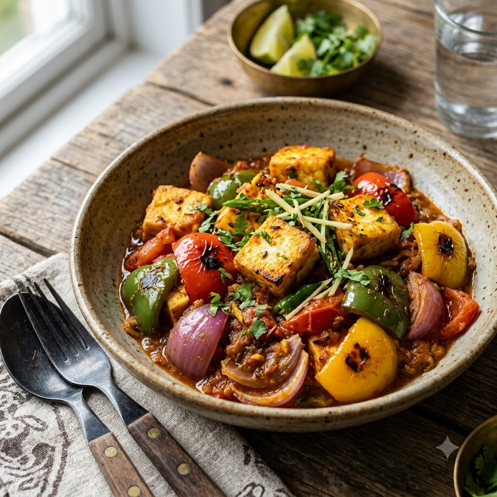

Paneer Jalfrezi

Paneer Jalfrezi
Chef Magic – Sauté Auto 20 min — Serves 4
Gluten-Free • Vegetarian • High-Protein • Everyday
Ingredients
- 250g paneer, cut into batons
- 1 onion, sliced
- 1 capsicum, julienned
- 1 tomato, sliced
- 1 tbsp ginger-garlic paste (adrak-lehsun paste)
- 1 tsp cumin seeds (jeera)
- 1 tsp red chilli powder (lal mirch powder)
- 1/2 tsp turmeric (haldi)
- 1 tsp coriander powder (dhania powder)
- 1 tbsp tomato ketchup or paste
- 1 tbsp soy sauce (optional, for a restaurant-style edge)
- 2 tbsp oil
- Salt to taste
Method
1Add oil and cumin seeds to the jar; select Sauté (Speed 2–4, ~130–160°C) until they splutter.
2Add onion and cook for 4 minutes until just softened but still with some bite.
3Add ginger-garlic paste, turmeric, chilli powder and coriander powder; sauté 2 minutes.
4Add capsicum and tomato; sauté for 5 minutes, keeping the vegetables crisp-tender rather than fully soft.
5Stir in ketchup, soy sauce if using, and salt; fold in the paneer batons and sauté gently for 4 minutes until just warmed through.
Tip: Jalfrezi is meant to be quick and high-heat, keeping the vegetables crunchy — don’t let it simmer down into a soft gravy.